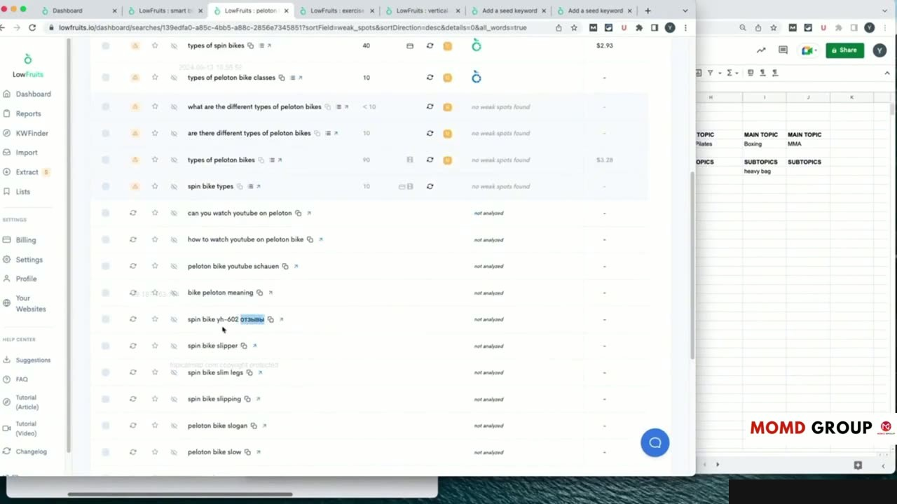
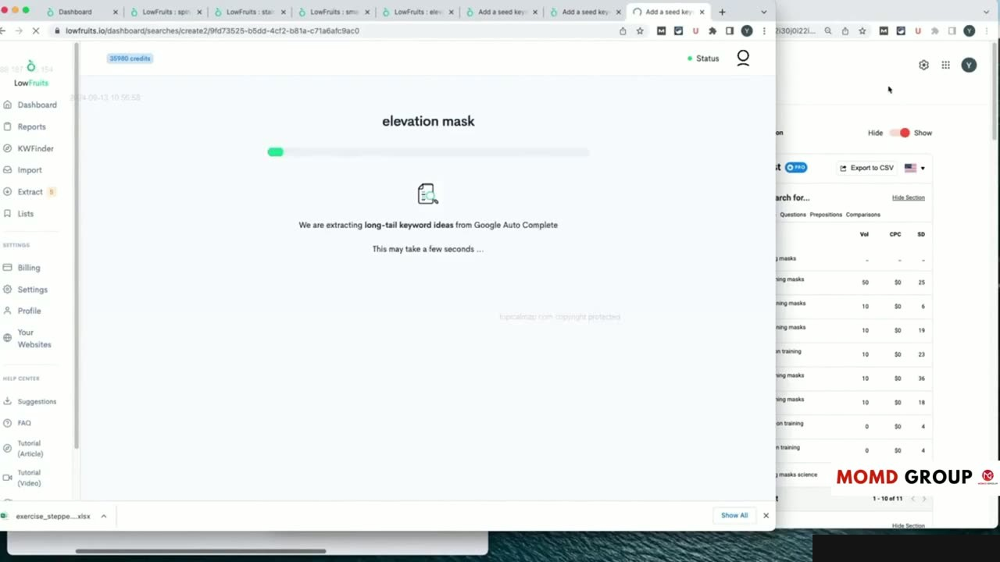
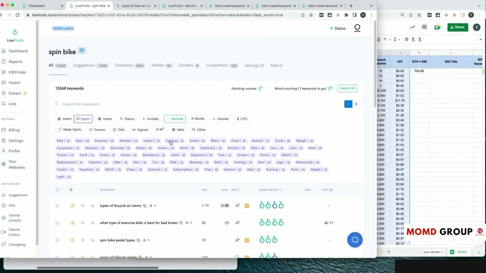
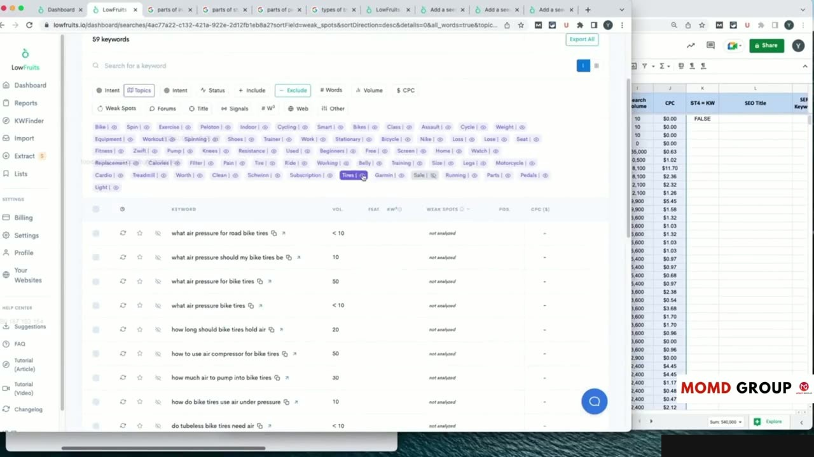

Practical Case Study: Semantic Clustering & Architecture Structuring
Quy chuẩn Thiết kế Cấu trúc Silo Độc lập và Chặt chẽ
Trong bài thực hành số 6 (video dài 23 phút), Yoyao đi sâu vào kỹ thuật thiết kế kiến trúc thông tin Silo: Semantic Clustering & Architecture Structuring.
Yoyao giải thích nguyên tắc cốt tử của kiến trúc Silo:
- Mỗi Silo phải là một ốc đảo kiến thức độc lập và khép kín về mặt ngữ nghĩa.
- Các bài viết bên trong một Silo liên kết chặt chẽ với nhau để tạo thành một khối thẩm quyền vững chắc.
- Tuyệt đối tránh việc đặt liên kết lộn xộn giữa các Silo không liên quan làm phân tán dòng chảy PageRank và khiến bot tìm kiếm khó hiểu ngữ cảnh cốt lõi.
Đây là nền tảng kỹ thuật quyết định tốc độ thăng hạng của toàn bộ website.

Sử dụng Sơ đồ Tư duy (Mind Mapping) để Trực quan hóa Kiến trúc
Yoyao sử dụng phần mềm lập sơ đồ tư duy để chuyển toàn bộ bảng tính thành biểu đồ trực quan:
Nhìn vào sơ đồ tư duy, bạn có thể ngay lập tức phát hiện nhánh Silo nào đang bị quá dày bài viết (Over-developed) và nhánh nào đang bị quá mỏng (Under-developed) cần bổ sung thêm.
Sơ đồ này cũng là công cụ trực quan tuyệt vời để trình bày chiến lược cho khách hàng hoặc ban giám đốc một cách thuyết phục.

Xây dựng Ma trận Liên kết Nội bộ (Internal Linking Matrix)
Yoyao hướng dẫn cách lập bảng kế hoạch liên kết nội bộ trước khi bắt tay vào viết bài:
- Xác định chính xác bài viết trụ cột (Pillar) là nơi đón nhận mọi liên kết từ các bài viết hỗ trợ (Supporting).
- Thiết lập quy tắc liên kết ngang (Cross-linking) giữa các bài viết anh em trong cùng một cụm chủ đề phụ.
- Quy định danh mục từ khóa neo (Anchor Text Diversification) để vừa đảm bảo tối ưu hóa tín hiệu ngữ nghĩa vừa tự nhiên, tránh bị phạt do thao túng liên kết.
Ma trận này giúp đội ngũ biên tập thi công chuẩn xác 100% chiến lược liên kết mà không cần phải suy nghĩ lại từ đầu.

Hoàn thiện Kiến trúc Thông tin Sẵn sàng Triển khai
Yoyao tổng duyệt lại toàn bộ sơ đồ kiến trúc và đối chiếu với các nguyên tắc chuẩn SEO ngữ nghĩa.
Tất cả các thành phần đã sẵn sàng để chuyển sang giai đoạn thực thi kỹ thuật trực tiếp trên nền tảng quản trị nội dung WordPress.

Nguồn và đối chiếu
- Topical Maps Unlocked 2.0 · 11-From Theory to Practice Module/video4.mp4 (Video bài học chính).
- Bản tiếng Anh không có video riêng cho bài học này; nội dung đối chiếu trực tiếp từ slide và video chính.